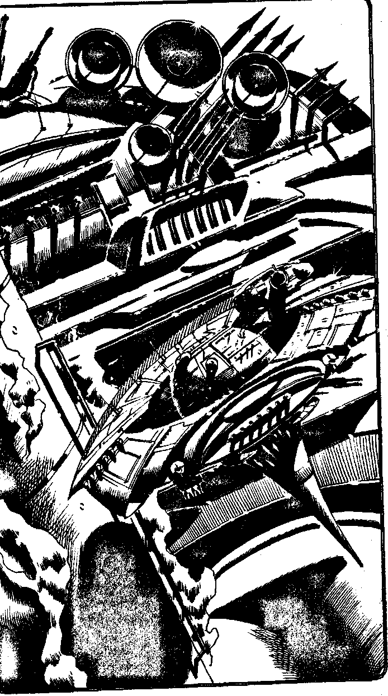

103
Condensation trails from the Strike Fighter's wing tips as you dive at Mach 5 into the thin atmosphere of Mechanon, towards the Central Computer Complex which glows a ghostly luminescent green. As you turn on reverse thrust and decelerate towards the huge hangar opening you notice a mobile fortress droid hovering upwards ahead of you, and a Planetary Defence Base beyond a huge iron cooling tower to your left. The fortress droid is a huge disc, bristling with missile lasers and plasma cannon space artillery. The Planetary Defence Base is a cluster of several missile launchers and radar dishes. The Battle computer reports an Atmospheric Interceptor closing up behind you at Mach 5.7, as two missiles streak towards you from the Defence Base. You decide to deal with the missiles first using electronic counter measures. Make an Attack Roll.
| 6,7,8,9,10,11,12 | Turn to 89 |
| 2,3,4,5 | Turn to 76 |